Key Metrics
Highest Sales Category
Technology
Sales & Profit Analysis
Sales by Category
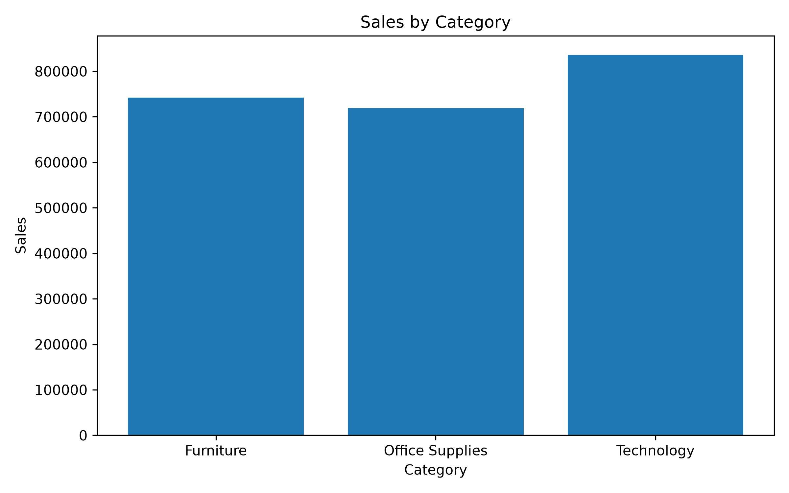
Profit by Category
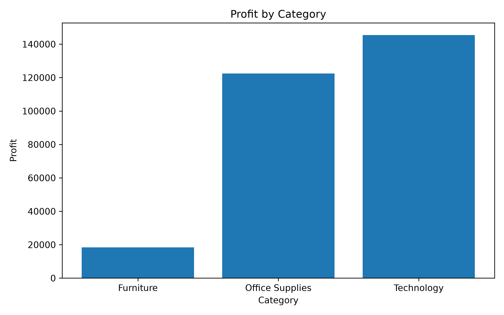
Sales and Profit by Category
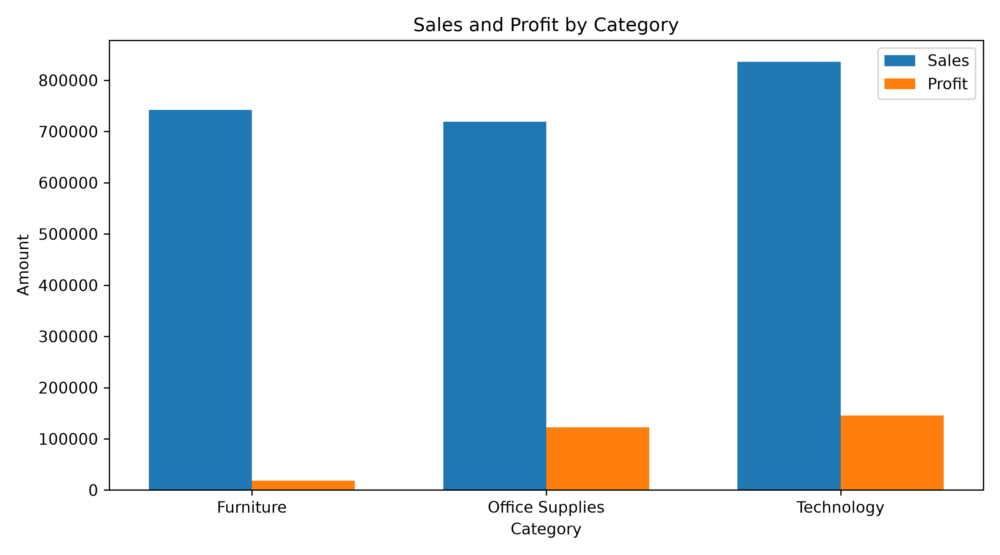
Sales by Year
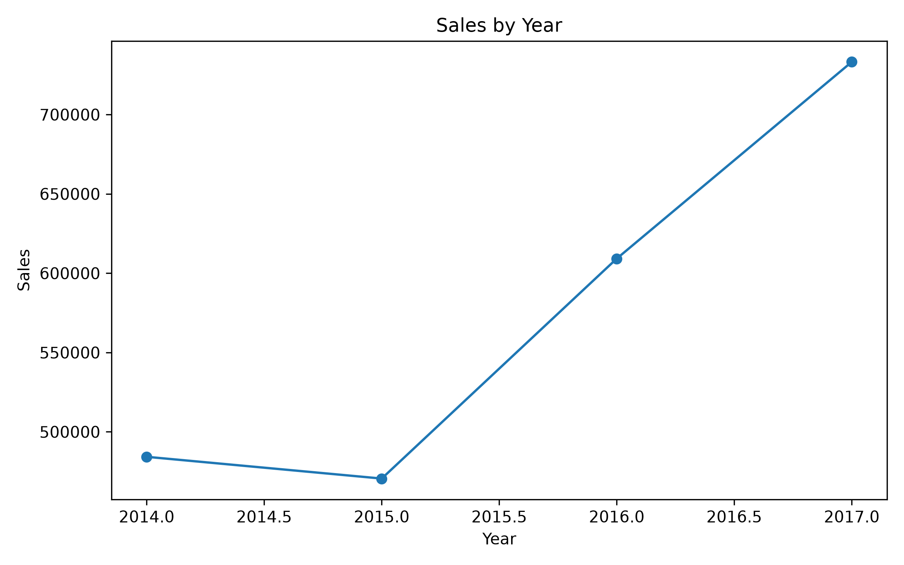
Data Relationships & Distributions
Sales vs Profit
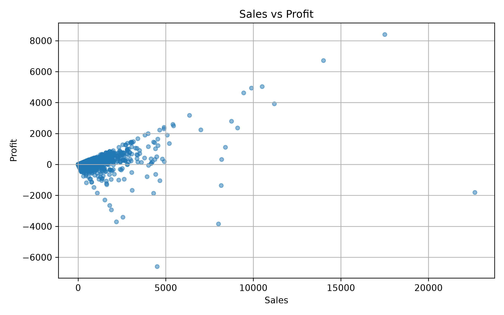
Sales Distribution
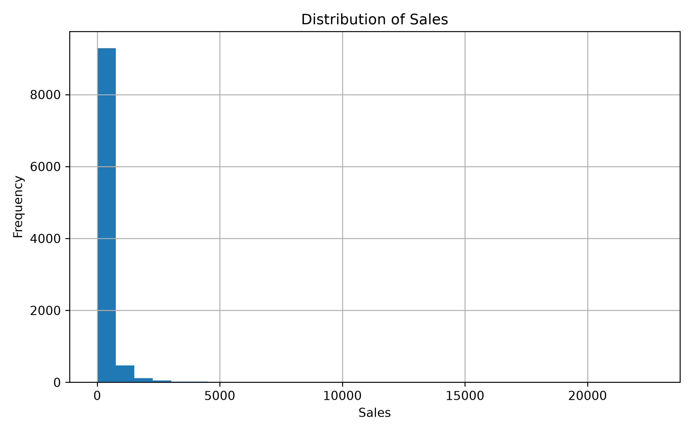
Profit Boxplot
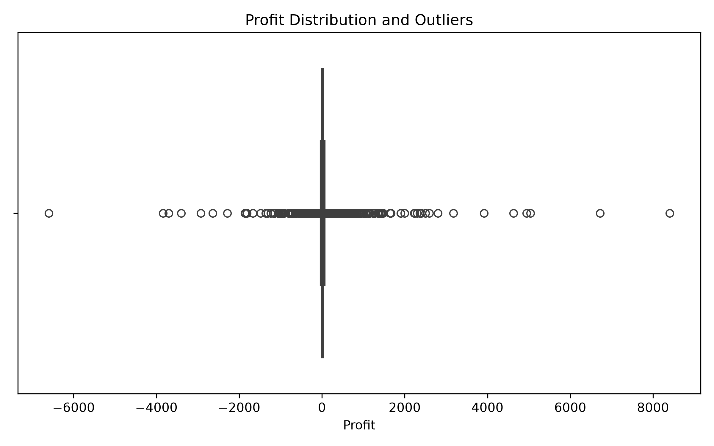
Sales Boxplot
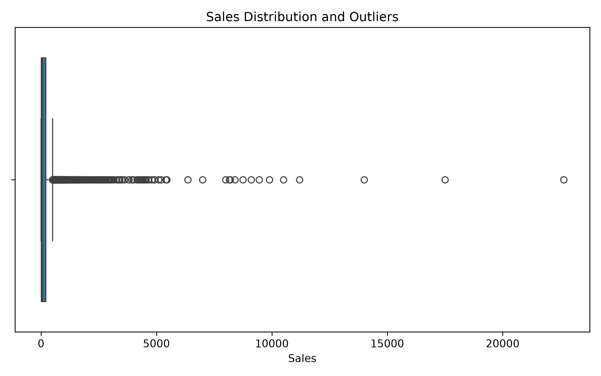
Seaborn Sales by Category
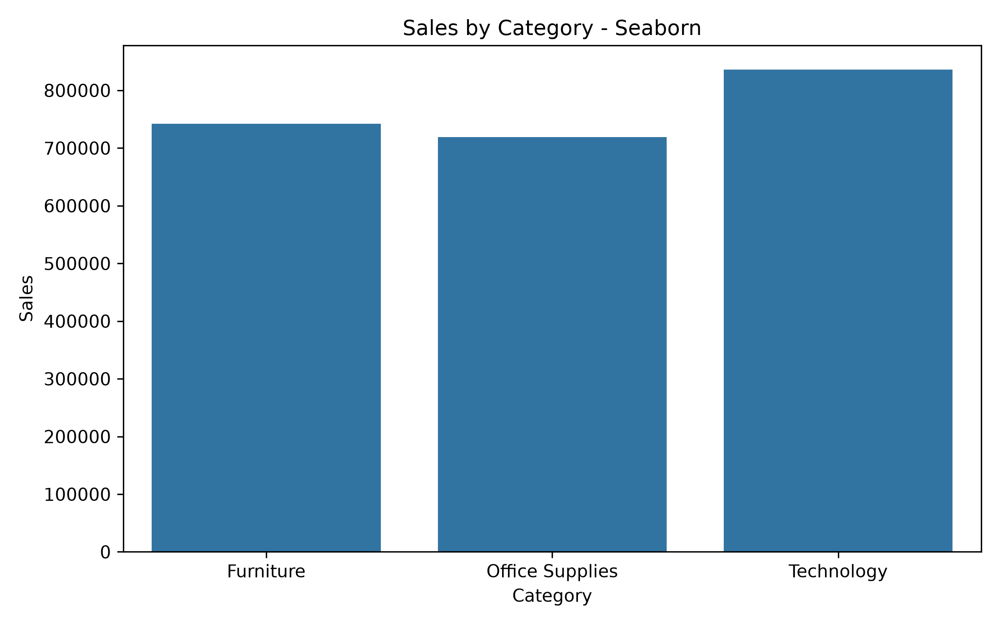
Seaborn Profit by Category
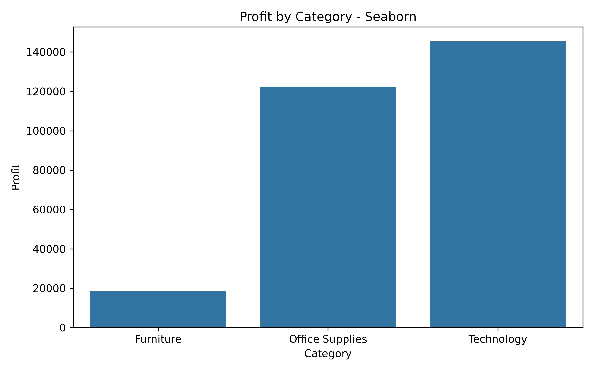
Correlation Heatmap
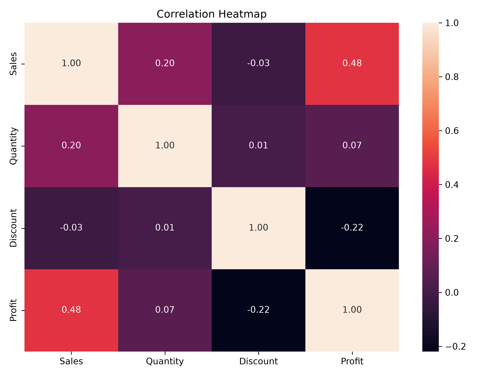
Key Findings
- The dataset contains 9,994 records and 21 columns.
- No missing values were found in the dataset.
- No duplicate rows were found.
- Technology generated the highest total sales.
- Technology also generated the highest total profit.
- Furniture generated high sales but considerably lower profit compared with the other categories.
- The IQR method identified 1,167 potential outliers in the Sales column.
- Sales and Profit had a moderate positive correlation of 0.48.
- Discount and Profit had a weak negative correlation of -0.22.
- Quantity and Profit had a very weak correlation of 0.07.